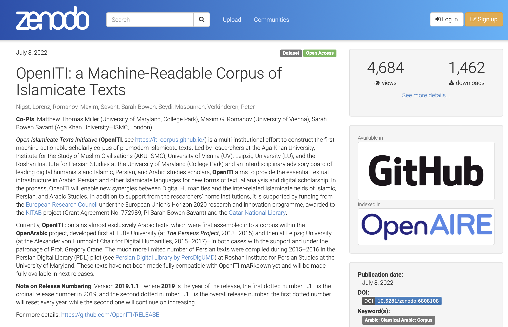
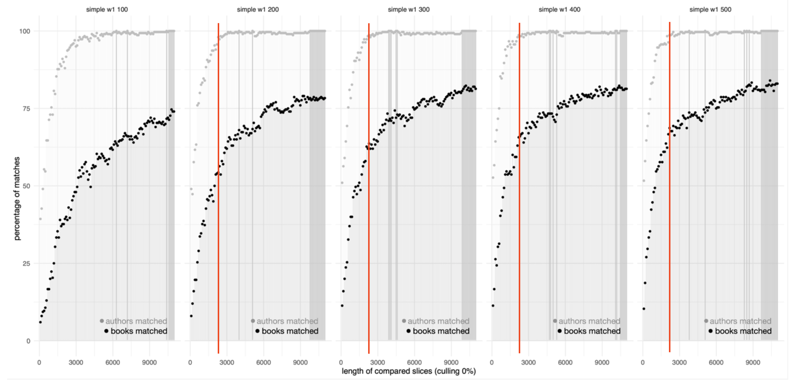

background-image: url(./images/cover.png) background-size: contain class: center, bottom ??? - Presentation @ DH2022, with Till Grallert --- background-image: url(./images/bg_default_2022_eis.png) background-size: contain class: center, middle ## Establishing parameters for stylometric authorship attribution of 19th-century Arabic books and periodicals Till Grallert, *Humboldt-Universität zu Berlin*, <till.grallert@hu-berlin.de> Maxim Romanov, *Universität Hamburg*, <maxim.romanov@uni-hamburg.de> ### #DH2022, 27 July 2022 ??? --- background-image: url(./images/bg_default_2022a_eis.png) background-size: contain class: center, middle # before the 19th century... --- background-image: url(./images/bg_default_2022a_eis.png) background-size: contain class: center, middle # OpenITI Corpus: GitHub --- background-image: url(./images/bg_default_2022a_eis.png) background-size: contain # OpenITI Corpus: Description - *Open Islamicate Texts Initiative* (*OpenITI*) - *website*: <https://openiti.org/> - *corpus*: <https://github.com/OpenITI> - LATEST RELEASE: Nigst, Lorenz, Romanov, Maxim, Savant, Sarah Bowen, Seydi, Masoumeh, *&* Verkinderen, Peter. (2022). *OpenITI: a Machine-Readable Corpus of Islamicate Texts* (2022.1.6) [Data set]. Zenodo. [](https://doi.org/10.5281/zenodo.6808108) - **NB:** started as *OpenArabic* under the patronage of Dr. Gregory Crane (at Perseus Digital Library and Leipzig U) - *OpenITI Statistics* - Number of unique book titles: **6,785** (**1,1 bln. tokens**) - Number of authors: **2,843** - Number of book titles (all versions/editions) **11,195** (**2,25 bln. tokens**) --- background-image: url(./images/bg_default_2022a_eis.png) background-size: contain # OpenITI: Zenodo Releases  --- background-image: url(./images/bg_default_2022a_eis.png) background-size: contain # OpenITI: Problems - Premodern texts: high level of text reuse - No publications on stylometric research on Arabic texts, especially premodern - Experimental discovery of optimal parameters: - 19th century test corpus (text reuse minimal-to-nonexistent) - testing all meaningfull combinations of parameters --- background-image: url(./images/bg_default_2022a_eis.png) background-size: contain # TR: *passim*.red.bold[*] <img src="./images/tr_example02.png" alt="Drawing" style="width: 700px;"/> .footnote[.red.bold[*]developed by David Smith, Northeastern University, USA] --- background-image: url(./images/bg_default_2022a_eis.png) background-size: contain # TR: *Taʾrīḫ al-islām* <img src="./images/ex01.png" alt="Drawing" style="width: 750px;"/> <img src="./images/ex02.png" alt="Drawing" style="width: 750px;"/> --- background-image: url(./images/bg_default_2022a_eis.png) background-size: contain # TR: *Taʾrīḫ al-islām* <img src="./images/ex03.png" alt="Drawing" style="width: 750px;"/> <img src="./images/ex04.png" alt="Drawing" style="width: 750px;"/> --- background-image: url(./images/bg_default_2022a_eis.png) background-size: contain # TR: *Taʾrīḫ al-islām* <img src="./images/ex05.png" alt="Drawing" style="width: 750px;"/> <img src="./images/ex06.png" alt="Drawing" style="width: 750px;"/> --- background-image: url(./images/bg_default_2022a_eis.png) background-size: contain # Stylometry with R: `stylo` - Eder, Maciej, Jan Rybicki, and Mike Kestemont. “Stylometry with R: A Package for Computational Text Analysis.” *The R Journal* 8, no. 1 (August 2016): 107–121. - their code, slightly modified to: - to load and preprocess the corpus in Arabic more efficiently; - to apply multiprocessing to speed things up; - to loop through all relevant parameters; --- background-image: url(./images/bg_default_2022a_eis.png) background-size: contain # Stylometry with R: *test corpus* - The dataset contains three collections of mainly literary Arabic texts from the 19th and early 20th centuries. - `corpus022_JurjiZaydan_Dated` is a dated corpus of 22 historical novels by Jurjī Zaydān. It is well established that Jurjī Zaydān was publishing roughly one novel per year and the dates of publication are well known, which makes this corpus a valuable material for testing chronological changes in the style of individual writers. - `corpus065` is a corpus of 65 books by 8 authors; - `corpus300` contains 300 books by 28 authors; - Romanov, Maxim. (2021). *A Corpus of Arabic Literature (19-20th centuries) for Stylometric Tests (1.0.0)* [Data set]. Zenodo. [](https://doi.org/10.5281/zenodo.5772261) --- background-image: url(./images/bg_default_2022a_eis.png) background-size: contain # Stylometry with R: *parameters* - MFF: 100-500 in increments of 100; - types of MFF: both words/tokens and characters; - lengths of MFF: from 1grams to 4grams in increments of 1; - culling unique features: from 0 to 50% in increments of 10; - all 14 distance measures available in “stylo”: - `cosine`, `delta`, `argamon`, `eder`, `minmax`, `entropy`, `[eder's] simple [delta]`, `wurzburg`, `manhattan`, `canberra`, `minkowski`, `euclidean`, `binary`, `maximum` - lengths of samples: from 100 to 12,000 tokens in increments of 100 - about 8 mln tests altogether. Many thanks to Sarah Savant and the KITAB Project, AKU-London, for their server! --- background-image: url(./images/bg_default_2022a_eis.png) background-size: contain # Stylometry with R: *tests* - only consecutive slices in this experiment, since one of the main questions was “what would be the shortest text for which we may still expect reliable results?” - a new temporary corpus was automatically generated for each combination of parameters where each text was represented by two slices of set length (i.e. we used 600 slices for each test) - then we checked how well we could match together slices from the same books and slices by the same authors using Ward’s clustering (`ward.D2` in `hclust`). - the results were then graphed to allow for a visual exploration of how the precision of matching changes as we gradually increase slices. --- background-image: url(./images/bg_default_2022a_eis.png) background-size: contain # Stylometry with R: *graphs*  The graph shows the best results, which have been achieved with: 100-500 single tokens as MFF, no culling, and Eder’s Simple Delta as the distance measure. With these parameters, we can expect almost 100% matching with 200-500 MFF and with slices as small as 2,500 tokens. We can even push to 1,700-1,800 tokens with matching still staying around 95%. --- background-image: url(./images/bg_default_2022a_eis.png) background-size: contain # Stylometry with R: *observations* - since the orthorgraphy of the Classical Arabic (i.e., premodern texts) has not changed, we can expect these parameters to work with classical texts equally well (they do :); - interesting question: Arabic of different periods... - suprisingly, character/letter ngrams did not work at all, while there were some expectations since Arabic is morphologically highly complex language; - the “same” word may appear in up to 50 different forms due to attached conjunctions, prepositions, articles, pronominal suffixed — and their numerous combinations); - unigrams (single tokens) give best results, while unigrams and bigrams together, and as TFIDF values, appear to work best for “genre” identification. - distances: cosine-based and delta-based distances gave best results. --- background-image: url(./images/bg_default_2022_eis.png) background-size: contain class: center, middle # Now, to Till’s part ...